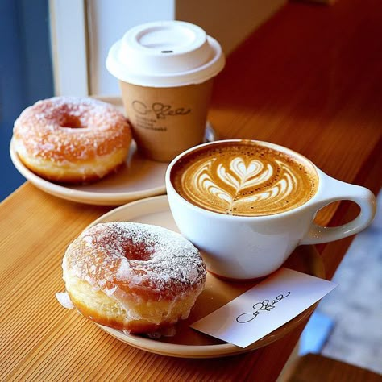

Unwind your mind, take a deep breath.
自分に還る時間を、一杯のコーヒーから
Concept
日常の合間に、心ほどける灯りを。
ざわつく思考を止めて、ここでは少しだけ深呼吸を。
画面から目を離し、揺れる湯気と静かに向き合う。
自分を慈しむひとときを一杯のコーヒーから。
ここは、どんな時もあなたが「素顔の自分」に戻れる場所です。
Service

まろやかな余韻
疲れた体にすっと馴染む、角のない優しい味わいの豆を厳選しました。
最後の一口まで温かな安心感が続きます。
身体を包み込む居心地
程よく暗い照明と、身体を預けられる椅子。
バターの香りがコーヒーの味をいっそう引き立てます。周囲を気にせず、自分の世界に浸れる静かな空間を整えて、あなたをお待ちしています。

小さなご褒美
一日の終わりに、ちょっとした甘い幸せを。
素材の優しさを活かした手作りのおやつが、心に溜まった疲れをそっと溶かしてくれます。
Menu
思考をほどき、心を満たす一杯


About
喧騒を離れ、呼吸を整える場所
Cafe Respiro（レスピロ）は、イタリア語で「深呼吸」を意味します。
慌ただしく過ぎていく日常の中でふと足を止め、自分のリズムを取り戻せる場所を作りたい。
そんな想いから、この小さな灯りを灯しました。
厳選した豆を挽く音、ゆっくりと流れるジャズ、そして窓から差し込む柔らかな光。
五感すべてが穏やかに満たされていく時間を、心ゆくまでお愉しみください。
Access
- 住所
- 〒123-4567
○○県○○市○○町1丁目2-3 - 開店時間
- 8:00 - 20:30 (L.O. 20:00)
- 定休日
- 水曜日
- Tel
- 03-1234-5678
目印 : 大きな建物があります。
Map Area